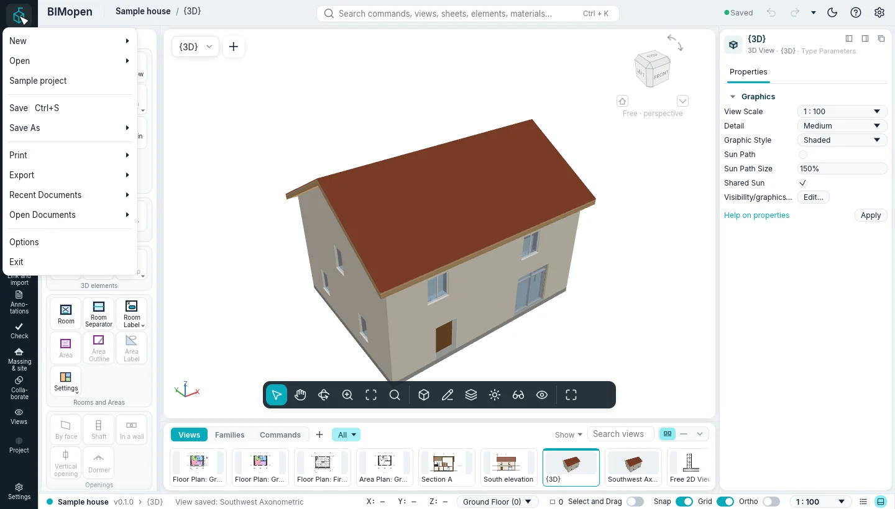
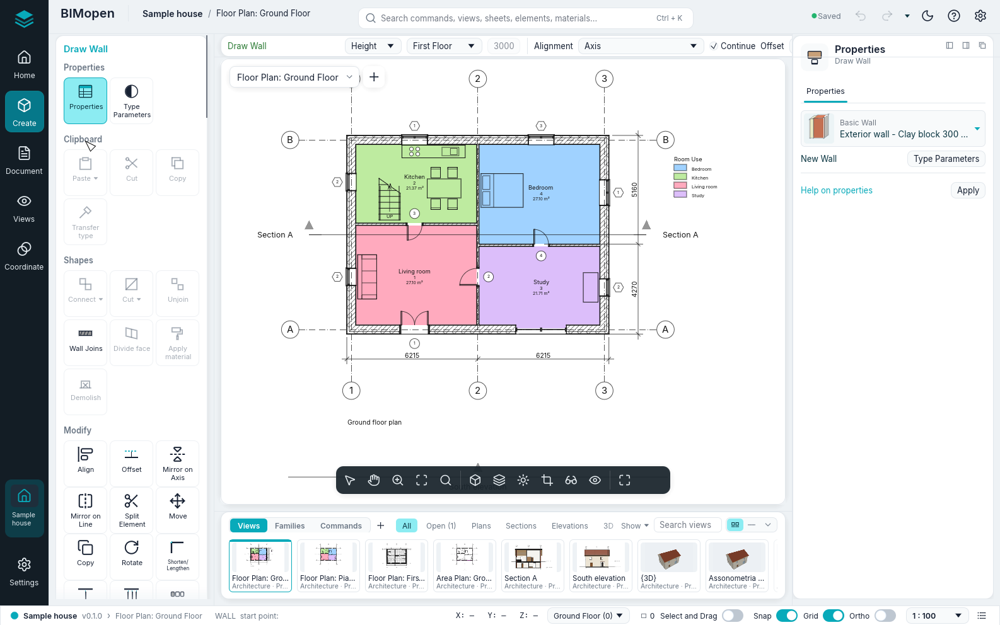
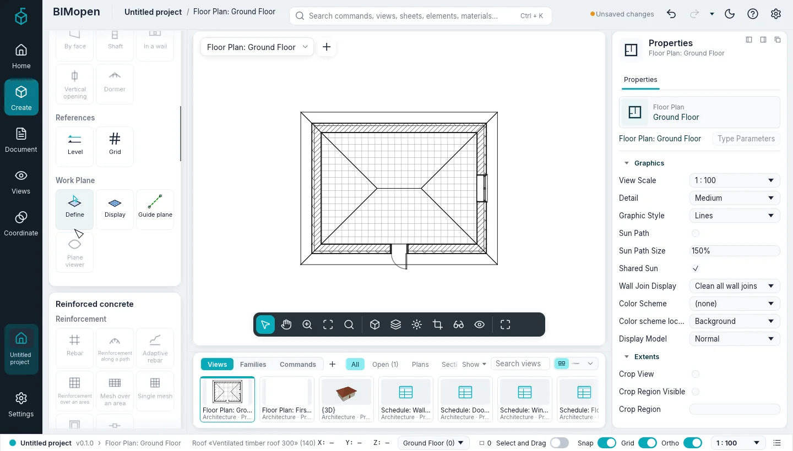
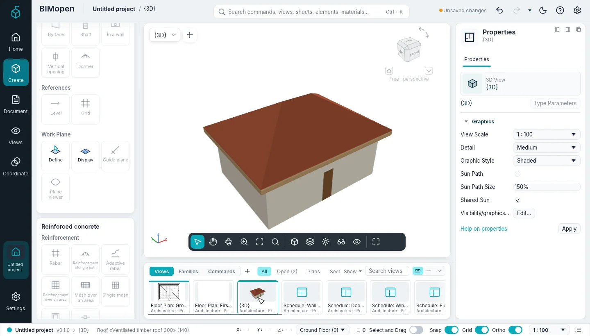
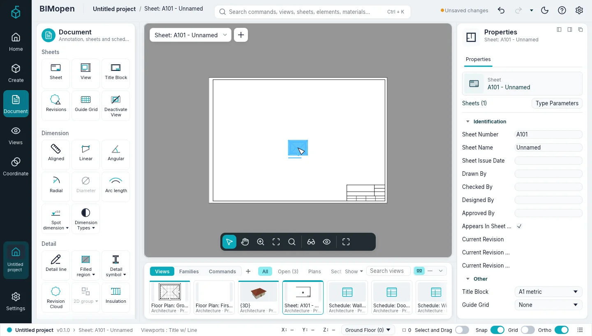

Getting started
This chapter shows how to start BIMopen on the desktop and in the browser, what the sample project contains, and how to model a first small house: four walls, a door, a window, a floor, a roof, a 3D view and a sheet with the plan on it. It takes about ten minutes.
Running BIMopen on the desktop
BIMopen is built from its source code with Rust, version 1.90 or later. On Linux the graphical interface also needs the development files of xkbcommon, Wayland and GTK 3.
sudo apt-get install -y libxkbcommon-dev libwayland-dev libgtk-3-dev # Debian, Ubuntu
cargo run --release -p bimopen -- --sample # opens the sample house
The program is bimopen. It accepts a file to open and one option:
| Command | What it opens |
|---|---|
bimopen |
A new, empty project |
bimopen --sample |
The sample house |
bimopen house.bimopen |
The project saved in house.bimopen |
bimopen --no-splash |
As bimopen, without the start screen |
You can also open a project by dragging a .bimopen file from the file manager into the window.
Start screen
While BIMopen loads, the start screen appears: a window without a frame, centred on the screen, with the name, the version, the loading stage under way with its percentage and a turquoise line growing along the bottom edge. The stages are the real ones (preferences, fonts, graphics card, families, opening the project); the screen stays at least half a second, so it does not flash, and fades out when the main window is ready. It speaks the language chosen in the app, otherwise the system's when it is one of the six, otherwise English.
To leave it out, clear Options ▸ General ▸ Show the start screen (BIMopen remembers it), or
start bimopen --no-splash. On Wayland the compositor decides where the window appears (usually
in the middle).
Language and theme
The first time, BIMopen speaks the language of the operating system when it is one of its six languages (Italian, English, German, French, Spanish, Arabic), and English otherwise. To change it, click the gear at the right end of the top bar (Options) and choose the Language under User Interface. The interface changes at once.
In Options you also choose the Theme, Light or Dark (the sun or the moon in the top bar switches it too), and whether the background of the views is inverted (Invert background color: dark views with light lines). Choosing the dark theme also inverts the background; you can turn it back off. At the first start BIMopen uses the dark theme, with the background inverted. It remembers the language, the theme and the background for the next time.
Running BIMopen in the browser
The web version is the same program, compiled for the browser. Open atsanna.github.io/bimopen-site/app/: it starts with the sample house. Nothing needs to be installed, and the project stays in your browser: it is not sent anywhere.
The address accepts these options, which can be combined with &:
| Address | Effect |
|---|---|
app/?lang=de |
Opens in German for this visit (it, en, de, fr, es, ar) |
app/?empty |
Starts with a new, empty project instead of the sample |
app/?webgl |
Draws with WebGL2 even where WebGPU is available |
The browser must support WebGPU or WebGL2. In the browser some things work differently:
- Open… cannot show a file dialog: drag a
.bimopenfile into the page to open it; - Save and the exports download the file, with the name of the project.
To build the web version yourself:
cargo xtask web # builds dist/web
python3 -m http.server 8080 -d dist/web # then open http://localhost:8080
cargo xtask web needs the wasm32-unknown-unknown target of Rust and the wasm-bindgen command
of the version written in Cargo.lock; with binaryen's wasm-opt installed, the result is
smaller.
The sample project
The sample house shows most of what BIMopen can do. Open it with Application menu ▸ Sample
project (the application menu is BIMopen's mark, at the top of the rail), with bimopen --sample, or by typing sample at the command line.
It contains:
- two levels, each with its floor plan, and five grid lines;
- fourteen walls of four types, with layers, joined at the corners;
- six doors and twelve windows, tagged in the plans;
- two floors, a pitched roof, a stair with its railings and a storefront curtain wall;
- furniture and plumbing fixtures, eight rooms coloured by use, with a legend;
- a section, an elevation, an area plan, a saved 3D view and a free 2D view with a wall detail;
- dimensions, text notes and the schedules of walls, doors, windows, rooms and materials;
- its place in Cagliari, where its address is: the sun and the shadows are those of that city.
Tip
The sample is a good place to try a tool before using it on your own project: a new sample is always one click away, and nothing you change in it is saved unless you save it.
Your first house
The steps below start from an empty project and end with a sheet. Every step names what to click in the BIMopen interface style, the one BIMopen starts in; the interface chapter explains each part of the window.
1. Start a new project
- Click BIMopen's mark at the top of the rail: the application menu opens.
- Click New ▸ Project…. The New project dialog proposes BIMopen's default template: click OK.

The new project has two levels, Ground Floor and First Floor, a floor plan for each, and the default 3D view. It has no walls yet. Its wall, door, window, floor and roof types are ready to use.
2. Open the ground floor plan
In the views strip under the drawing area, click the thumbnail Floor Plan: Ground Floor. The plan opens in the drawing area, and the top bar and the view selector show Floor Plan: Ground Floor.
Note
Views on the rail also shows the Project Index, the tree of every view: there, a single click on a view shows its properties in the element panel without opening it, and a double-click opens it.
3. Draw four walls
- In the tools of Create, the rail entry BIMopen opens with, click Wall in the Build group (if the tool panel is folded, click Create on the rail first). The contextual card Draw Wall comes on top of the tool panel, the options strip over the view shows the settings of the wall, and the element panel shows the type of the next wall, Exterior wall - Clay block 300 + ETICS.
- In the status bar, turn on Ortho: the walls stay horizontal or vertical.
- Click in the plan where the first corner goes. The status bar asks for the next point:
WALL next point [Esc to finish]:.

- Click the second, third and fourth corners. While you move the mouse, the length and the angle of the wall being drawn are shown next to it.
- Click the first corner again: the four walls are joined at the corners.
- Press Esc to stop the chain, and Esc again to end the tool.
Tip
You can draw the same walls by typing their corners in metres:
wall 0,0 10,0 10,6 0,6 c. The final c closes the chain. See
Command line and MCP.
4. Add a door and a window
- Click Create ▸ Build ▸ Door, then click on a wall where the door goes. The door is placed
in the wall, which is cut around it. The command log confirms it:
Door «Single swing door 80x210» in wall …. - Press Esc: the tool ends and the contextual card goes away.
- Click Create ▸ Build ▸ Window, click on another wall, and press Esc.
A door or a window can only be placed in a wall: after a click away from the walls, the command
line answers no wall at that point and nothing is placed.
5. Add a floor and a roof
- Click Create ▸ Build ▸ Flooring. Sketch mode opens: the contextual card Edit | Create Floor Boundary, with Pick Walls active.
- Move the cursor over a wall and press Tab: the four walls are highlighted. Click: their lines go on the inner faces of the walls.
- Click Finish Edit Mode: the floor is made and the command log gives its area.
- Click Create ▸ Build ▸ Roof. Pick Walls is active again; the options strip has Defines Slope (ticked) and the Overhang (500 mm by default).
- Press Tab over a wall, click, then Finish Edit Mode: a hip roof sloping at 30° covers the walls, with the overhang all around.

Floors, roofs, stairs and components tells more about sketch mode.
6. Look at it in 3D
Click the {3D} thumbnail in the views strip. The default 3D view, {3D}, opens. Drag with the right mouse button (or with Shift and the middle button) to orbit, drag with the middle button to pan, and turn the wheel to zoom; the left button selects, as in plans. Home fits the whole model in the view.

7. Put the plan on a sheet
- Click Document on the rail, then Sheet in the Sheets group. The New Sheet dialog lists the title blocks: none, A0, A1, A2 or A3, with their size in millimetres.
- Click OK. The sheet is created with the next free number (A101 for the first one, then A102…) and opens.
- Click Document ▸ Sheets ▸ View. The Views dialog lists the views that are not on a sheet yet.
- Choose Floor Plan: Ground Floor and click Add View to Sheet. A rectangle of the plan's size follows the cursor: click on the sheet where the plan goes. It is placed at its own scale, 1 : 100, as a viewport, which stays selected.

8. Undo, redo and save
- Ctrl+Z undoes the last change (here, the viewport goes away); Ctrl+Y redoes it. The arrows of the top bar, Undo and Redo, do the same.
- Ctrl+S saves the project, as a click on the save state in the top bar. A project that has
never been saved asks for a file name first; the file has the extension
.bimopen. In the browser, the file is downloaded.
The top bar says Unsaved changes while there are changes to save, and Saved after saving.
What next
- The interface describes every part of the window.
- Keyboard shortcuts lists the keys and the two-letter shortcuts, such as
WAfor a wall. - Command line and MCP shows how to type commands, run scripts and let an agent model for you.